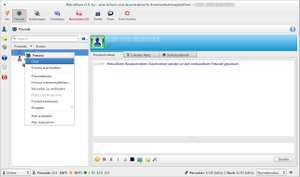
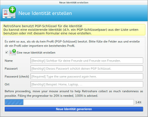
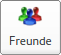
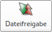
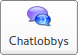
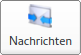
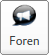

RetroShare
Dieser Artikel wurde für die folgenden Ubuntu-Versionen getestet:
Ubuntu 16.04 Xenial Xerus
Ubuntu 14.04 Trusty Tahr
Zum Verständnis dieses Artikels sind folgende Seiten hilfreich:
RetroShare  ist eine betriebssystemunabhängige und quelloffene P2P-Plattform, die eine dezentralisierte, private und sichere Kommunikation ermöglicht. Es unterstützt eine gemeinsame Datennutzung, wobei ein gleichzeitiges Hoch- und Herunterladen mit mehreren Freunden möglich ist, außerdem Chats, Nachrichten, Foren und Nachrichtenkanäle, UPnP/NAT-PMP Port-Weiterleitungen und über eine Erweiterung auch Internet-Telefonie. Das Programm zeichnet sich zusätzlich durch eine recht einfache Bedienung aus.
ist eine betriebssystemunabhängige und quelloffene P2P-Plattform, die eine dezentralisierte, private und sichere Kommunikation ermöglicht. Es unterstützt eine gemeinsame Datennutzung, wobei ein gleichzeitiges Hoch- und Herunterladen mit mehreren Freunden möglich ist, außerdem Chats, Nachrichten, Foren und Nachrichtenkanäle, UPnP/NAT-PMP Port-Weiterleitungen und über eine Erweiterung auch Internet-Telefonie. Das Programm zeichnet sich zusätzlich durch eine recht einfache Bedienung aus.

RetroShare kommt vollkommen ohne zentrale Server aus. Der Datenverkehr wird dabei grundsätzlich mittels OpenSSL verschlüsselt.
Installation¶
Die Anwendung ist nicht in den offiziellen Paketquellen enthalten. Zur Installation muss man daher auf ein "Personal Package Archiv" (PPA) [1] ausweichen.
PPA¶
Adresszeile zum Hinzufügen des PPAs:
ppa:retroshare/stable
Hinweis!
Zusätzliche Fremdquellen können das System gefährden.
Ein PPA unterstützt nicht zwangsläufig alle Ubuntu-Versionen. Weitere Informationen sind der  PPA-Beschreibung des Eigentümers/Teams retroshare zu entnehmen.
PPA-Beschreibung des Eigentümers/Teams retroshare zu entnehmen.
Damit Pakete aus dem PPA genutzt werden können, müssen die Paketquellen neu eingelesen werden.
Nach dem Aktualisieren der Paketquellen kann folgendes Paket installiert [2] werden:
retroshare06 (ppa)
 mit apturl
mit apturl
Paketliste zum Kopieren:
sudo apt-get install retroshare06
sudo aptitude install retroshare06
Einrichtung¶
Bevor man Retroshare optimal nutzen kann, muss man noch einige Sachen einrichten. Zuallererst muss man sich eine Identität erstellen, dann muss man noch Freunde hinzufügen und die Firewall anpassen.

Neue Identität erstellen¶
Nach dem ersten Start bittet Retroshare den Nutzer eine neue Identität zu erstellen. Man muss sich einen Namen und ein sicheres Passwort für die Anmeldung überlegen. Außerdem muss man noch einen Ort angeben. Bei dieser Identität handelt es sich um einen speziellen PGP-Schlüssel. Dieser setzt sich wie jeder PGP-Schlüssel aus einem privaten und einen öffentlichen Schlüsselteil zusammen. Den öffentlichen Schlüssel muss man entweder per E-Mail oder auf anderem Wege seinem Freund senden, um sich mit diesem verschlüsselt über Retroshare zu verbinden und mit Hilfe des privaten Schlüssels, kann man sich mit der selben Identität auch an mehren Computern anmelden, dafür wird auch die Angabe des Ortes benötigt.
Im Unterschied zu anderen Programmen wird die Identität nur lokal im Ordner ~/.retroshare im Homeverzeichnis gespeichert und nicht auf einem Server.
Plugins bestätigen¶
Wenn man die Identität erfolgreich erstellt hat, dann wird man nach der Eingabe des Passwortes gefragt, um das eigentliche Programm zu starten. Beim ersten Start kann es vorkommen, dass man gefragt wird, ob man ein "Nicht registriertes Plug-in/Programm" aktivieren möchte. Dabei kann es sich entweder um über die Paketverwaltung installierte Plugins handeln, dies erkennt man am Speicherort /usr/lib/retroshare/extensions/**.so oder um selbst installierte Plugins im Ordner ~/.retroshare/extensions/**.so Falls man eine Erweiterung installiert hat, kann man hier der Aktivierung zustimmen.
Freunde hinzufügen¶
Um einen Freund hinzufügen zu können, brauchen beide Freunde jeweils den öffentlichen Teil des PGP-Schlüssel des Freundes. Diesen kann man entweder als Text oder als Datei austauschen.
Dazu öffnet man mit einen Klick  auf das Symbol den Assistent zum Hinzufügen eines Freundes. Daraufhin hat man die Möglichkeit den öffentlichen Schlüssel in ein Textfeld hinein zu kopieren oder die Datei mit dem Schlüssel einzulesen. Außerdem kann man auch einen Freund, der noch kein Retroshare benutzt, eine automatisch generierte E-Mail schicken, die den öffentlichen Schlüssel schon enthält.
auf das Symbol den Assistent zum Hinzufügen eines Freundes. Daraufhin hat man die Möglichkeit den öffentlichen Schlüssel in ein Textfeld hinein zu kopieren oder die Datei mit dem Schlüssel einzulesen. Außerdem kann man auch einen Freund, der noch kein Retroshare benutzt, eine automatisch generierte E-Mail schicken, die den öffentlichen Schlüssel schon enthält.
Bedienung¶
Das Hauptfenster besteht aus den Bereichen Freunde, Dateifreigabe, Chatlobbys, Nachrichten, Kanäle und Forum. Im Folgenden werden die Bereiche näher vorgestellt.
| Bereich | |
| Symbol | Beschreibung |
| In diesem Bereich werden alle Meldungen der unterschiedlichen Bereiche aufgelistet. Hier wird man zum Beispiel benachrichtigt, wenn neue Nachrichten, Foreneinträge, Chatanfragen eingegangen sind. | |
|  | Hier sieht man eine Übersicht über alle Freunde mit denen man verbunden ist. Außerdem kann man hier Chats mit einzelnen Freunden starten, einstellen wie sehr man welchem Freund vertraut und sich grafisch die Verknüpfung der Freundschaften anzeigen. |
|  | Dieser Bereich zeigt die Datenübertragung an. Es werden alle getätigten Up- und Downloads angezeigt. Außerdem kann man von Freunden freigegebene Datei durchsuchen und herunterladen. |
|  | Hier kann man Gruppenchats erstellen. |
|  | Der Bereich ist ein integriertes E-Mail Programm. Diese E-Mails werden verschlüsselt an die Freunde versendet und werden direkt übertragen, wenn beide online sind. Ein Versenden von Anhängen ist auch möglich. |
| Hier kann man Fotos und Videos teilen und kommentieren. | |
|  | In diesem Bereich kann man Foren erstellen und die Foren von Freunden sehen und abonnieren. |
| Dieser Bereich begleitet den Benutzer bei den ersten Schritten. Dazu gehört das Einladen von Freunden, dem Hinzufügen von Freunde, wie sich Retroshare mit Freunden verbindet und dem öffnen der Firewall in. | |
In der linken Spalte befinden sich verschiedene Einstellungsmöglichkeiten:
| Einstellungen | |
| Symbol | Beschreibung |
| Öffnet den Assistenten zum Hinzufügen von neuen Freunden. | |
 | Öffnet den RetroShare-Freigabemanager, bei dem man einstellen kann, welche Ordner über Retroshare Freunden zur Verfügung gestellt werden. |
| Öffnet den Dialog zum Einstellen der Berechtigungen der Freunde. Hier kann man genau einstellen, welcher Freund auf welchen Bereich Zugriff hat. | |
| Zeigt Informationen über die Entwickler an. | |
| Öffnet den Einstellungsdialog, bei dem man sehr viele Einstellungen rund um RetroShare tätigen kann. | |
| Retroshare komplett beenden. Nutzt man hingegen das Schließen über die Titelleiste, so wird Retroshare nur in den Tray minimiert. | |
Erweiterungen¶
Im PPA befinden sich außerdem noch einige Erweiterungen, von denen vor allem VoIP (Internet-Telefonie) nützlich ist:
retroshare-voip-plugin (ppa)
retroshare-linkscloud-plugin (ppa)
retroshare-feedreader-plugin (ppa)
mit apturl
Paketliste zum Kopieren:
sudo apt-get install retroshare-voip-plugin retroshare-linkscloud-plugin retroshare-feedreader-plugin
sudo aptitude install retroshare-voip-plugin retroshare-linkscloud-plugin retroshare-feedreader-plugin
Links¶
Wiki
- Dokumentation
Retroshare – Wikipedia
Bitmessage – alternatives System, das sich allerdings auf den Austausch von Nachrichten beschränkt
- Erstellt mit Inyoka
-
 2004 – 2017 ubuntuusers.de • Einige Rechte vorbehalten
2004 – 2017 ubuntuusers.de • Einige Rechte vorbehalten
Lizenz • Kontakt • Datenschutz • Impressum • Serverstatus -
Serverhousing gespendet von